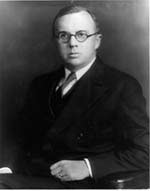
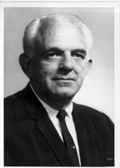

Sanford Bates, 1930-1937
Before becoming the Bureau's first Director, Sanford Bates served in the Massachusetts State legislature from 1912-1917.
He served as the Commissioner of Penal Institutions in Boston from 1917-1919 and as Commissioner of Massachusetts
Department of Corrections from 1919-1929. Mr. Bates became Superintendent of Prisons, U.S. Department of Justice, in 1929.
While in this post, Mr. Bates prepared the legislation that established the Bureau in 1930.
From 1934-1972, he served as President (Chairman) of Federal Prison Industries, Incorporated.
Mr. Bates also served as President of the American Correctional Association (ACA), and after retiring as Director, served as
Executive Director of the Boys Clubs of America, Parole Commissioner for New York State, and New Jersey State
Commissioner of Institutions and Industries.
|
|
....................................................................................................................................
|

James V. Bennett, 1937-1964
Before joining the BOP, James Bennett was a veteran of the U.S. Army Air Corps and served as an Investigator for the U.S. Bureau of Efficiency. Mr. Bennett then authored "The Federal Penal and Correctional Problem," a Bureau of Efficiency report that paved the way for the creation of the Bureau of Prisons.
He served as an Assistant Director for the BOP from 1930-1937 and helped draft much of the legislation that affected Federal corrections, including the laws that established the Bureau and Federal Prison Industries, as well as the Federal Youth Corrections Act. Mr. Bennett served the longest tenure of any BOP Director to date.
Mr. Bennett was a member of numerous U.S. delegations to the International Penal and Penitentiary Congress and the United Nations' Congress on the Prevention of Crime. He also served as President, National Association for Better Broadcasting; President, Joint Commission on Correctional Manpower and Training; President, American Correctional Association (ACA); Chairman, American Bar Association Section on Criminal Law. He received the President's Award for Distinguished Federal Civilian Service, the War Department's Exceptional Civilian Service Medal, and ACA's E.R. Cass Award.
|
|
....................................................................................................................................
|

Myrl E. Alexander, 1964-1970
Myrl E. Alexander served the BOP in various capacities, including at USP Atlanta, USP Leavenworth, USP Lewisburg, and FCI Danbury.
He served as Chief of Prisons, Military Government for Germany from 1945-1946, then served as the Assistant Director,
Bureau of Prisons from1947-1961. Mr. Alexander was the Founder and a professor of the Center for the Study of Crime,
Delinquency, and Corrections at Southern Illinois University and was a Professor at the University of Florida.
Mr. Alexander served as ACA President and on the Executive Board of the Illinois Synod of the Lutheran Church in America. Mr. Alexander received the President's Award for Distinguished Federal Service and ACA's E.R. Cass Award.
|
|
....................................................................................................................................
|
Norman A. Carlson, 1970-1987
Before joining the BOP, Norm Carlson served as a Correctional Officer in the Iowa State Penitentiary in 1956. He began his BOP career at USP Leavenworth and then subsequently worked at FCI Ashland. From 1960 to 1970, Mr. Carlson served in various capacities in the Bureau's Central Office, including as Executive Assistant to Director Myrl Alexander. He was a member of the U.S. delegations to four United Nations' conferences on crime prevention and served as ACA President.
Mr. Carlson was the recipient of numerous awards, including the Presidential Rank Award as Meritorious Executive in the Senior Executive Service, ACA's E.R. Cass Award, the Arthur S. Flemming Award, and the Attorney General's Award for Exceptional Service.
Upon retirement from the Bureau, Mr. Carlson joined the faculty of the University of Minnesota's Department of Sociology and served as an adjunct professor until 1998. He has served as a Director of the Wackenhut Corrections Corporation since April 1994.
|
|
....................................................................................................................................
|
J. Michael Quinlan, 1987-1992
J. Michael Quinlan began his career with the Bureau of Prisons in 1971 as an Attorney in Central Office. He served as Executive Assistant to the Warden, U.S. Penitentiary, Leavenworth, KS and as Regional Counsel for the Northeast Regional Office.
In 1975, Mr. Quinlan was named Executive Assistant to the Director, a position he held until 1978, when he was named Superintendent of the Federal Prison Camp, Eglin Air Force Base, FL. He became Warden at the Federal Correctional Institution (FCI), Otisville, NY in 1980, and transferred to Central Office as Deputy Assistant Director, Medical and Services Division, in 1985. He was named Deputy Director in March 1986, a position he held until his appointment as Director in July 1987.
In 1988, Mr. Quinlan received the Presidential Distinguished Rank Award; and in 1991, he received the Presidential Meritorious Rank Award and the Attorney General's Exceptional Leadership Award. In 1992, he received the National Public Service Award of the National Academy of Public Administration and the American Society of Public Administration, and the President's Excellence Award from the League of United Latin American Citizens.
|
|
....................................................................................................................................
|
Kathleen Hawk Sawyer, 1992-2003
Dr. Kathleen Hawk Sawyer began her nearly 27-year BOP career in 1976 as a psychologist at FCI Morgantown, WV, and subsequently held positions of increasing responsibility as Chief of Psychology Services at Morgantown; Senior Instructor at the Bureau of Prisons' Staff Training Academy (STA), Glynco, GA; Associate Warden at FCI Fort Worth, TX; the Bureau's Chief of Staff Training at STA; and Warden at FCI Butner. In May 1989, Dr. Hawk Sawyer was selected as Assistant Director for the Program Review Division, where she was responsible for developing and implementing a system of internal controls for all Bureau operations.
During her career, Dr. Hawk Sawyer received numerous awards, including the Attorney General's Award for Excellence in Management (1992); the Presidential Rank Award for Meritorious Service (1994 and 2000); the Surgeon General's Medallion for "significant and noteworthy contributions to the Office of the Surgeon General, the Public Health Service, and the health of the Nation" (1997); ACA's E.R.Cass Correctional Achievement Award (1997); the Presidential Distinguished Executive Award (1997); the Association of State Correctional Administrators' (ASCA) Michael Francke Award as the outstanding correctional administrator (1998); the Edmund Randolph Award for outstanding service in DOJ (2001); and the Eastern Kentucky University College of Justice and Safety Distinguished Professional Award (2003).
|
|


 Printer Friendly Version
Printer Friendly Version